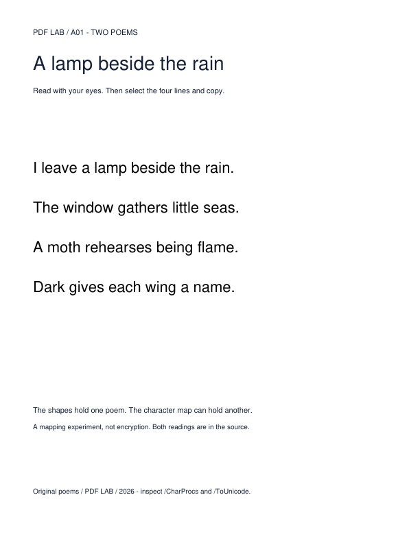
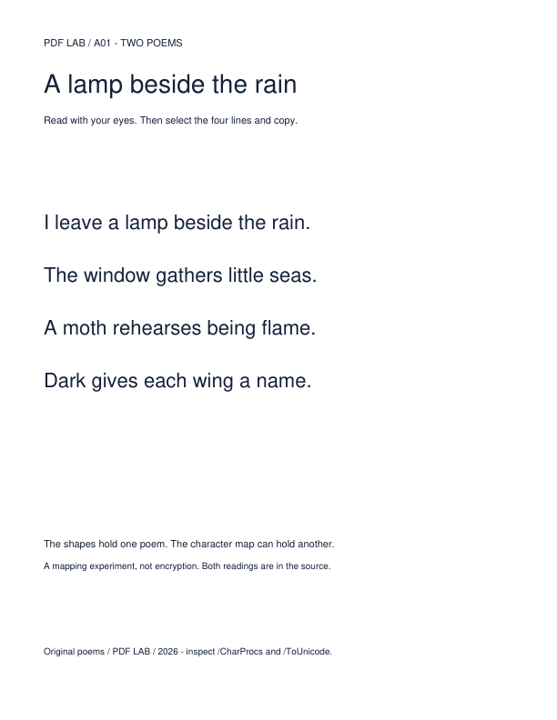

PDF LAB / A01 / A 60-SECOND OPENING
What survives when
a document travels?
A PDF promises that what you see is what arrives. Here is one real file from our cabinet. Read it first.
Keys: → or Space next · ← back · C cabinet
1 · READ WITH YOUR EYES
Four lines
about a lamp.
This is the page a person sees. Read the verse out loud if you like.
Recorded MuPDF 1.26.11 rendering of the actual file, 72 dpi. Open the PDF itself to check: 01-poem-other.pdf ↗

2 · NOW LET A MACHINE READ THE SAME FILE
Same file. Same pixels.
Another poem.
- Loading recorded extraction…
Recorded extraction from evidence/poems-results.json. Both engines render identical pixels for the visible and alternate files (within each engine).
3 · THE MECHANISM
One drawing.
One separate
character map.
Each line is a single Type 3 glyph. Its drawing procedure paints the words you saw. A separate /ToUnicode stream tells software which text that glyph means. We wrote a different poem there.
No hidden layer, no invisible text, no JavaScript. The visible and alternate files differ only in that stream (and byte offsets). This is an authored experiment, not encryption — both readings are plainly in the file.
4 · LET THE FILE TRAVEL
Rewrite it once.
The picture stays.
The reading collapses.
We passed the file through one ordinary rewrite: Ghostscript 10.08.0 pdfwrite. It still looks like the same poem.
- Poppler pixels changed
- …
- MuPDF pixels changed
- …
- Text extracted afterwards
- …
Measured once in a bounded local run; other rewrite tools and settings were not run. Rewritten PDF ↗ · Transformation notebook

PDF preserved the look. It never promised the meaning — or who stands behind it.
What should survive when an answer travels through AI?
Next: .phf — human context that travels with the answer.
What this opening does and does not claim
- RECORDED Renders, extractions and pixel counts come from committed runs: MuPDF 1.26.11 (PyMuPDF 1.26.6), Poppler 26.08.0, Ghostscript 10.08.0. See poems-results.json and poems-transforms.json.
- LIVE The character map in step 3 is parsed by this page from the actual PDF bytes, with a SHA-256 checked against the recorded hash. It is not a PDF viewer.
- Not run: native viewer copy/paste, screen readers, OCR, physical printing, other rewrite tools. Poppler joins and reorders the mapped lines. No claim that every reader behaves this way, and no claim of forgery or a viewer defect.